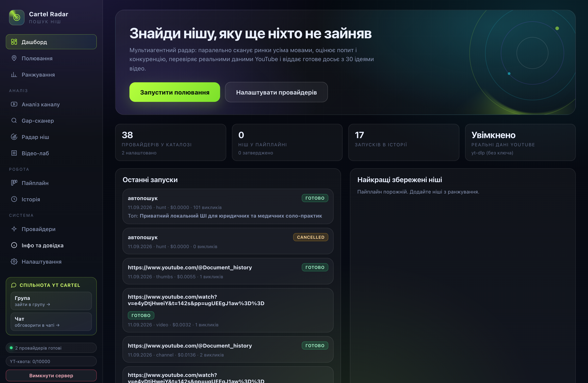
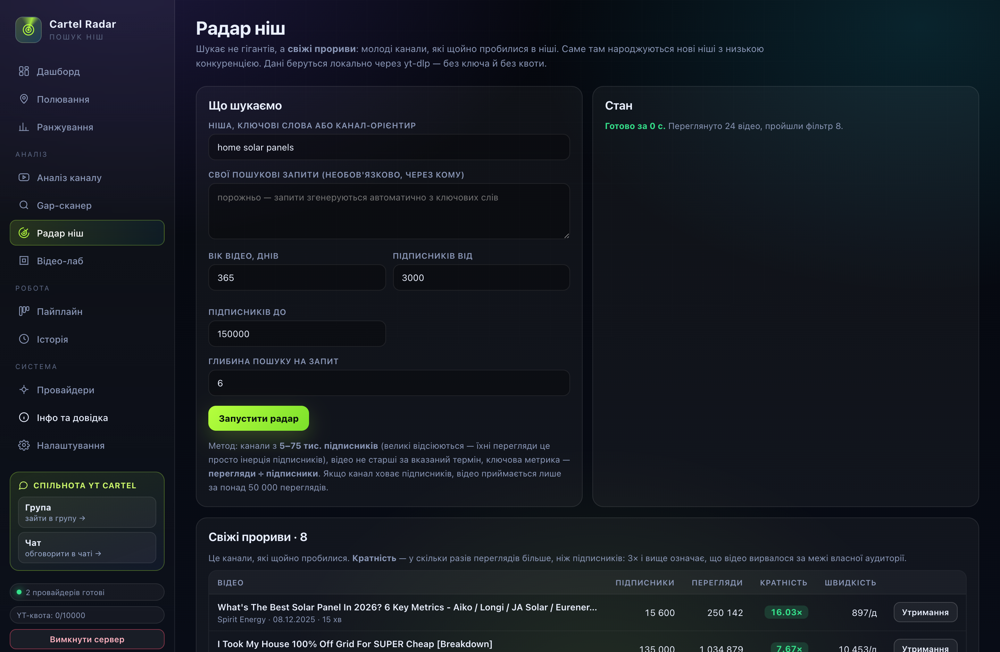
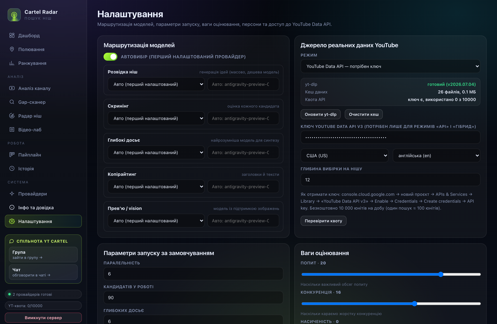

Cartel Radar
Застосунок шукає ніші на YouTube, які ще не зайняті, і доводить вибір реальними цифрами: переглядами, підписниками, швидкістю набору та кривою уваги аудиторії. Усе працює на вашому комп'ютері — ключі нікуди не йдуть, окрім запиту до обраного вами провайдера моделі.
Реальні дані, а не фантазії
Дані YouTube збираються локально через вбудований yt-dlp — без ключа й без добової квоти. Офіційний API теж підтримується.
38 провайдерів моделей
Gemini, OpenAI, Anthropic, DeepSeek, Groq, Mistral, Z.ai, Kimi, Grok і локальні Ollama / LM Studio. Можна додати будь-який свій OpenAI-сумісний ендпоінт.
Нічого не треба збирати
Жодної залежності в рантаймі: node server.mjs — і все. Працює на macOS і Windows.
Що вміє застосунок
| Розділ | Що робить |
|---|---|
| Полювання | Кілька модель-агентів паралельно шукають ніші за вашими критеріями й одразу відсіюють слабкі. |
| Ранжування | Оцінка 0–10 за дев'ятьма критеріями з вагами. Ви бачите число, а не «мені здається». |
| Канали | Розбір каналу: хіти, провали, кратність до медіани, швидкість набору, статистика заголовків. |
| Радар ніш | Свіжі прориви: канали 5–75 тис. підписників, які щойно вирвалися за межі своєї аудиторії. |
| Gap-аналіз | Що в ніші вже знято, а що просять у коментарях, але ніхто не зробив. |
| Відео-лаб | Розбір одного відео: точні цифри, крива уваги, темпоритм мовлення, коментарі. |
| Пайплайн | Воронка від ідеї до «знімаю»: зібрано → перевірено → затверджено. |
| Досьє | Документ по ніші: 30 ідей відео, формули заголовків, концепти прев'ю, ризики, план на 30 днів. |
Скріншоти



З чого почати
- Встановіть застосунок — на macOS або Windows.
- Додайте ключ до моделі — або підключіть локальну модель без ключа.
- Виберіть джерело даних YouTube — рекомендовано yt-dlp: без ключа й квоти.
- Відкрийте Радар ніш, впишіть тему й натисніть «Запустити радар».
- Знайдену нішу відправте в пайплайн і згенеруйте досьє.
Оновлення просто із застосунку
Застосунок зібрано з модулів: інтерфейс, логіка, сервер і довідка. Кожен можна оновити окремо — у розділі Оновлення є кнопка «Перевірити оновлення», а далі видно, які модулі застаріли, і можна оновити все або лише вибране.
- Швидко. Повний інсталятор важить понад 100 МБ, а оновлення модуля — кілобайти.
- Безпечно. Кожен файл звіряється з хешем із переліку в репозиторії. Якщо вміст не збігається — оновлення скасовується.
- З відкатом. Перед заміною старі версії файлів копіюються в теку даних.
- Дані не чіпаються. Ключі, історія, ніші та налаштування залишаються на місці.
Навіщо взагалі ключі
Застосунок сам нічого не вигадує — він думає разом із мовною моделлю. Модель працює на серверах провайдера, тому потрібен ключ. Ключ зберігається у вашому файлі config.json з правами доступу 600 і надсилається тільки тому провайдеру, чий ключ ви вставили.
Подяки
Частину ідей для застосунку підкинули люди зі спільноти. Окрема подяка:
@Max_ai_work — за ідеї, які стали частиною Cartel Radar.
Маєте ідею або знайшли нішу, яку варто показати? Пишіть у чат спільноти.